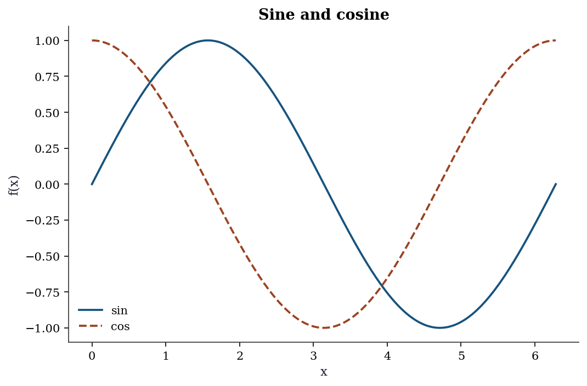
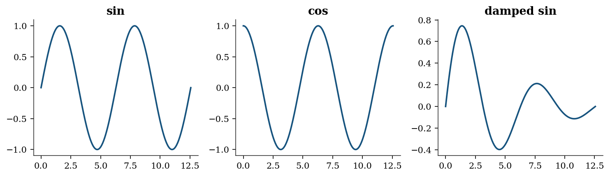
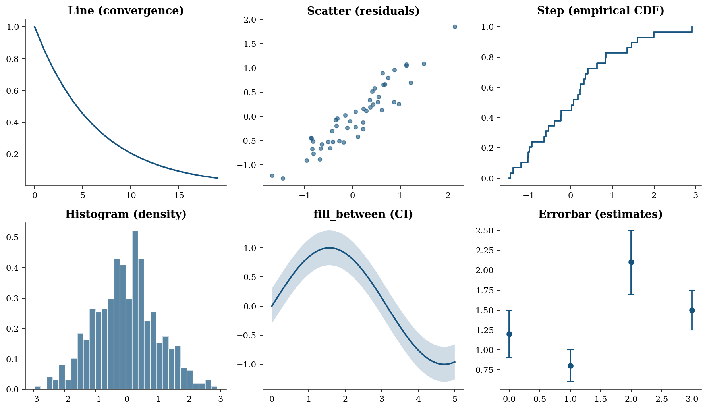
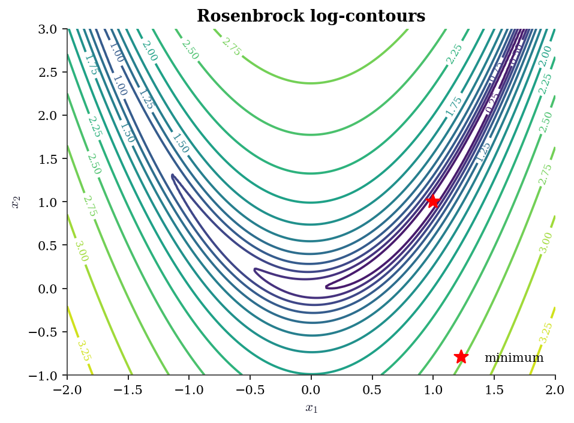
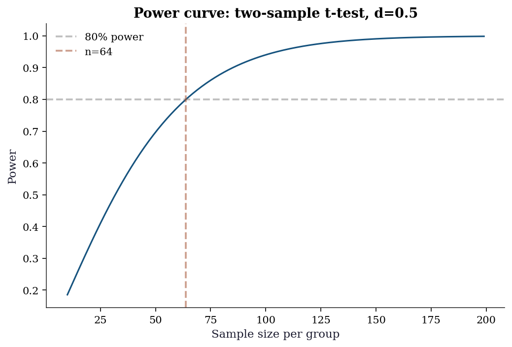

import numpy as np
from scipy import stats, linalg, optimize
import statsmodels.api as sm
import matplotlib.pyplot as plt
plt.style.use('assets/book.mplstyle')
rng = np.random.default_rng(42)Appendix C — Appendix C: Python Scientific Computing Reference
This appendix is a reference, not a tutorial. It gathers the computational tools assumed by the main chapters in one place, with runnable examples and pointers to where each tool is used. If you know Python but have not worked with NumPy, SciPy, or statsmodels before, read this appendix first — it provides the vocabulary the rest of the book speaks in.
NumPy Essentials
NumPy is the foundation everything else sits on. Every chapter in this book creates, reshapes, slices, and combines arrays. This section covers the patterns that recur most often.
C.0.1 Array creation
The most common constructors:
# Zeros, ones, and identity
print("zeros(3): ", np.zeros(3))
print("ones((2,3)): \n", np.ones((2, 3)))
print("eye(3): \n", np.eye(3))
# Sequences
print("arange(0, 1, 0.3):", np.arange(0, 1, 0.3))
print("linspace(0, 1, 5):", np.linspace(0, 1, 5))zeros(3): [0. 0. 0.]
ones((2,3)):
[[1. 1. 1.]
[1. 1. 1.]]
eye(3):
[[1. 0. 0.]
[0. 1. 0.]
[0. 0. 1.]]
arange(0, 1, 0.3): [0. 0.3 0.6 0.9]
linspace(0, 1, 5): [0. 0.25 0.5 0.75 1. ]arange uses a step size and may or may not include the endpoint (floating-point rounding decides). linspace uses a count and always includes both endpoints — prefer it for grids where exact endpoints matter.
# From existing data
a = np.array([1.0, 2.0, 3.0])
print("array: ", a, "dtype:", a.dtype)
# Diagonal matrix from a vector
print("diag([1,2,3]):\n", np.diag([1, 2, 3]))
# Repeat and tile
print("repeat: ", np.repeat([1, 2], 3))
print("tile: ", np.tile([1, 2], 3))array: [1. 2. 3.] dtype: float64
diag([1,2,3]):
[[1 0 0]
[0 2 0]
[0 0 3]]
repeat: [1 1 1 2 2 2]
tile: [1 2 1 2 1 2]C.0.2 Indexing and slicing
NumPy arrays support integer indexing, slicing, boolean indexing, and fancy (array) indexing. Slices return views — modifying the slice modifies the original. Fancy indexing returns copies.
X = np.arange(12).reshape(3, 4)
print("X:\n", X)
# Basic slicing (views)
print("Row 0: ", X[0])
print("Col 1: ", X[:, 1])
print("Submatrix:\n", X[:2, 1:3])
# Boolean indexing (copy)
mask = X > 5
print("X[X > 5]: ", X[mask])
# Fancy indexing (copy)
rows = np.array([0, 2])
print("Rows 0,2: \n", X[rows])X:
[[ 0 1 2 3]
[ 4 5 6 7]
[ 8 9 10 11]]
Row 0: [0 1 2 3]
Col 1: [1 5 9]
Submatrix:
[[1 2]
[5 6]]
X[X > 5]: [ 6 7 8 9 10 11]
Rows 0,2:
[[ 0 1 2 3]
[ 8 9 10 11]]C.0.3 Broadcasting
Broadcasting lets NumPy operate on arrays with different shapes without explicit loops or copies. The rule: dimensions are compared from the right; they are compatible if they are equal or one of them is 1. A missing dimension is treated as 1.
# Scalar broadcast
a = np.array([1, 2, 3])
print("a + 10:", a + 10)
# Column vector + row vector -> matrix
col = np.array([[1], [2], [3]]) # shape (3, 1)
row = np.array([10, 20, 30, 40]) # shape (4,)
print("col + row:\n", col + row) # shape (3, 4)
# Centering columns of a matrix (subtract column means)
X = rng.standard_normal((4, 3))
X_centered = X - X.mean(axis=0) # (4,3) - (3,) -> (4,3)
print("Column means after centering:",
X_centered.mean(axis=0).round(15))a + 10: [11 12 13]
col + row:
[[11 21 31 41]
[12 22 32 42]
[13 23 33 43]]
Column means after centering: [ 0. -0. 0.]Broadcasting is used throughout the book — centering data (Ch. 11), evaluating densities on grids (Ch. 7), and computing pairwise distances (Ch. 19) all rely on it.
C.0.4 Reshape, ravel, and transpose
a = np.arange(12)
print("reshape(3,4):\n", a.reshape(3, 4))
print("reshape(3,-1):\n", a.reshape(3, -1)) # infer columns
M = a.reshape(3, 4)
print("ravel:", M.ravel()) # back to 1-D (view)
print("M.T:\n", M.T) # transposereshape(3,4):
[[ 0 1 2 3]
[ 4 5 6 7]
[ 8 9 10 11]]
reshape(3,-1):
[[ 0 1 2 3]
[ 4 5 6 7]
[ 8 9 10 11]]
ravel: [ 0 1 2 3 4 5 6 7 8 9 10 11]
M.T:
[[ 0 4 8]
[ 1 5 9]
[ 2 6 10]
[ 3 7 11]]Use -1 in one dimension to let NumPy infer it. ravel() returns a view when possible; flatten() always returns a copy.
C.0.5 Stacking and splitting
Combining arrays is a constant need — assembling design matrices, collecting bootstrap samples, or building block-diagonal structures.
a = np.array([1, 2, 3])
b = np.array([4, 5, 6])
# Vertical and horizontal stacking
print("vstack:\n", np.vstack([a, b]))
print("hstack: ", np.hstack([a, b]))
# column_stack: treat 1-D arrays as columns
print("column_stack:\n", np.column_stack([a, b]))
# concatenate: general-purpose
M1 = np.ones((2, 3))
M2 = np.zeros((2, 3))
print("concatenate (axis=0):\n",
np.concatenate([M1, M2], axis=0))vstack:
[[1 2 3]
[4 5 6]]
hstack: [1 2 3 4 5 6]
column_stack:
[[1 4]
[2 5]
[3 6]]
concatenate (axis=0):
[[1. 1. 1.]
[1. 1. 1.]
[0. 0. 0.]
[0. 0. 0.]]np.column_stack is the most common pattern in this book — it builds the design matrix \(\mathbf{X}\) from individual predictor vectors. np.vstack appears when stacking observation batches.
C.0.6 Useful functions
Several NumPy functions appear often enough to warrant a brief catalog:
x = np.array([-2.5, 0.3, 1.7, 4.2, -0.1])
# where: element-wise conditional
print("where(x>0, x, 0):", np.where(x > 0, x, 0))
# clip: bound values
print("clip(-1, 2): ", np.clip(x, -1, 2))
# searchsorted: binary search on sorted array
sorted_a = np.array([1, 3, 5, 7, 9])
print("searchsorted(4): ", np.searchsorted(sorted_a, 4))
# cumsum and diff
print("cumsum: ", np.cumsum([1, 2, 3, 4]))
print("diff: ", np.diff([1, 4, 6, 10]))
# einsum: Einstein summation (trace example)
A = np.array([[1, 2], [3, 4]])
print("trace via einsum:", np.einsum('ii', A))
print("matmul via einsum:\n",
np.einsum('ij,jk->ik', A, A))where(x>0, x, 0): [0. 0.3 1.7 4.2 0. ]
clip(-1, 2): [-1. 0.3 1.7 2. -0.1]
searchsorted(4): 2
cumsum: [ 1 3 6 10]
diff: [3 2 4]
trace via einsum: 5
matmul via einsum:
[[ 7 10]
[15 22]]np.einsum is the Swiss army knife for tensor contractions. It appears in Ch. 19 for multivariate statistics and in Ch. 14 for mixed-effects computations where explicit loops over groups would be slow.
C.0.7 Views vs copies: a common trap
Understanding when NumPy returns a view (shared memory) vs a copy (independent memory) prevents subtle bugs:
a = np.arange(5)
b = a[1:4] # slice -> view
b[0] = 99
print(f"a after modifying slice: {a}")
# a is modified because b is a view
c = a[[1, 2, 3]] # fancy index -> copy
c[0] = -1
print(f"a after modifying fancy: {a}")
# a is NOT modified because c is a copya after modifying slice: [ 0 99 2 3 4]
a after modifying fancy: [ 0 99 2 3 4]Rule of thumb: basic slicing produces views; boolean and fancy indexing produce copies. When in doubt, call .copy() explicitly. This matters in Ch. 9 (bootstrap resampling) where accidentally modifying the original data through a view would corrupt results.
Matplotlib Essentials
Every figure in this book is produced with Matplotlib. The book’s style sheet (assets/book.mplstyle) sets publication-quality defaults — serif fonts, suppressed top/right spines, a colorblind-friendly cycle with alternating line styles, and 300 dpi output.
C.0.8 The Figure/Axes model
Matplotlib distinguishes between the figure (the canvas) and one or more axes (the individual plots). The explicit axes API gives full control:
fig, ax = plt.subplots()
x = np.linspace(0, 2 * np.pi, 200)
ax.plot(x, np.sin(x), label="sin")
ax.plot(x, np.cos(x), label="cos")
ax.set_xlabel("x")
ax.set_ylabel("f(x)")
ax.set_title("Sine and cosine")
ax.legend()
plt.show()
For multiple panels, use subplots with rows and columns:
fig, axes = plt.subplots(1, 3, figsize=(10, 3))
t = np.linspace(0, 4 * np.pi, 300)
for i, (func, name) in enumerate([
(np.sin, "sin"), (np.cos, "cos"),
(lambda x: np.sin(x) * np.exp(-x / 5), "damped sin"),
]):
axes[i].plot(t, func(t))
axes[i].set_title(name)
fig.tight_layout()
plt.show()
C.0.9 Common plot types used in the book
The chapters use a small set of plot types repeatedly. Here is a gallery with the calling conventions:
fig, axes = plt.subplots(2, 3, figsize=(12, 7))
# Line plot (convergence traces, Ch. 2-6)
axes[0, 0].plot(
np.arange(20),
np.exp(-np.linspace(0, 3, 20)),
)
axes[0, 0].set_title("Line (convergence)")
# Scatter plot (residuals, Ch. 11-12)
xs = rng.standard_normal(50)
ys = 0.8 * xs + 0.3 * rng.standard_normal(50)
axes[0, 1].scatter(xs, ys, alpha=0.6, s=20)
axes[0, 1].set_title("Scatter (residuals)")
# Step plot (CDFs, Ch. 9)
data = np.sort(rng.standard_normal(30))
axes[0, 2].step(
data,
np.linspace(0, 1, 30),
where="post",
)
axes[0, 2].set_title("Step (empirical CDF)")
# Histogram (distributions, Ch. 7-8)
axes[1, 0].hist(
rng.standard_normal(500),
bins=30, density=True, alpha=0.7,
edgecolor="white",
)
axes[1, 0].set_title("Histogram (density)")
# fill_between (confidence bands, Ch. 11)
xf = np.linspace(0, 5, 100)
yf = np.sin(xf)
axes[1, 1].plot(xf, yf)
axes[1, 1].fill_between(
xf, yf - 0.3, yf + 0.3, alpha=0.2,
)
axes[1, 1].set_title("fill_between (CI)")
# Errorbar (parameter estimates, Ch. 10)
means = [1.2, 0.8, 2.1, 1.5]
errs = [0.3, 0.2, 0.4, 0.25]
axes[1, 2].errorbar(
range(4), means, yerr=errs,
fmt="o", capsize=4,
)
axes[1, 2].set_title("Errorbar (estimates)")
fig.tight_layout()
plt.show()
C.0.10 Contour plots
Contour plots visualize objective-function landscapes (Ch. 2–5):
x_grid = np.linspace(-2, 2, 200)
y_grid = np.linspace(-1, 3, 200)
Xg, Yg = np.meshgrid(x_grid, y_grid)
Z = (1 - Xg)**2 + 100 * (Yg - Xg**2)**2 # Rosenbrock
fig, ax = plt.subplots(figsize=(7, 5))
cs = ax.contour(
Xg, Yg, np.log10(Z + 1),
levels=15, cmap="viridis",
)
ax.clabel(cs, fontsize=8)
ax.plot(1, 1, "r*", markersize=12, label="minimum")
ax.set_xlabel("$x_1$")
ax.set_ylabel("$x_2$")
ax.set_title("Rosenbrock log-contours")
ax.legend()
plt.show()
C.0.11 Saving figures
fig.savefig("figure.pdf") # vector, for print
fig.savefig("figure.png") # raster, for screen
fig.savefig("figure.png", dpi=300, bbox_inches="tight")The book style sheet sets savefig.dpi: 300 and savefig.bbox: tight by default, so the explicit keyword arguments are rarely needed.
C.0.12 What book.mplstyle sets
The style file configures: serif fonts (Latin Modern Roman / Computer Modern), figure size 8 x 5 at 150 dpi, suppressed top and right spines, an 8-color cycle designed for grayscale readability with alternating solid/dashed/dot-dash/dotted line styles, outward-facing ticks, and frameless legends. Loading it via plt.style.use('assets/book.mplstyle') in each chapter’s import block ensures every figure in the book has a consistent appearance.
Floating Point and Conditioning
Every computation in this book runs on IEEE 754 double-precision floating point. Key facts:
- Machine epsilon: \(\epsilon_{\text{mach}} \approx 2.2 \times 10^{-16}\). Two numbers closer than this relative to their magnitude are indistinguishable.
- Representable range: doubles span roughly \(10^{-308}\) to \(10^{308}\). Operations outside this range produce underflow (silently flushed to zero) or overflow (
inf). - Catastrophic cancellation: \(a - b\) when \(a \approx b\) loses significant digits. This is why
np.logaddexp(0, x)is preferred overnp.log(1 + np.exp(x))for the log-sigmoid function.
print(f"Machine epsilon: {np.finfo(float).eps:.2e}")
print(f"Smallest positive: {np.finfo(float).tiny:.2e}")
print(f"Largest finite: {np.finfo(float).max:.2e}")Machine epsilon: 2.22e-16
Smallest positive: 2.23e-308
Largest finite: 1.80e+308C.0.13 Catastrophic cancellation in practice
# Naive vs stable log-sigmoid
x_vals = np.array([0.0, 20.0, 50.0, 100.0, 500.0, 710.0])
print(f"{'x':>6} {'naive':>22} {'stable':>22}")
for xv in x_vals:
naive = np.log(1 / (1 + np.exp(-xv)))
stable = -np.logaddexp(0, -xv)
print(f"{xv:6.0f} {naive:22.15e} {stable:22.15e}") x naive stable
0 -6.931471805599453e-01 -6.931471805599453e-01
20 -2.061153694291927e-09 -2.061153620314381e-09
50 0.000000000000000e+00 -1.928749847963918e-22
100 0.000000000000000e+00 -3.720075976020836e-44
500 0.000000000000000e+00 -7.124576406741286e-218
710 0.000000000000000e+00 -4.476286225675130e-309At \(x = 710\) the naive version overflows because np.exp(710) exceeds the double range. The stable version handles this correctly. This matters for log-likelihood evaluation in logistic regression (Ch. 12–13).
C.0.14 Condition number
The condition number \(\kappa(\mathbf{A}) = \|\mathbf{A}\| \cdot \|\mathbf{A}^{-1}\|\) measures how much a linear system \(\mathbf{Ax} = \mathbf{b}\) amplifies input errors. A system with \(\kappa = 10^k\) loses roughly \(k\) digits of accuracy.
# Well-conditioned vs ill-conditioned
print(f"Identity(5): kappa = "
f"{np.linalg.cond(np.eye(5)):.1f}")
print(f"Hilbert(5): kappa = "
f"{np.linalg.cond(linalg.hilbert(5)):.0f}")
print(f"Hilbert(10): kappa = "
f"{np.linalg.cond(linalg.hilbert(10)):.2e}")
print(f"Hilbert(15): kappa = "
f"{np.linalg.cond(linalg.hilbert(15)):.2e}")Identity(5): kappa = 1.0
Hilbert(5): kappa = 476607
Hilbert(10): kappa = 1.60e+13
Hilbert(15): kappa = 4.24e+17The Hilbert matrix is the classic example of near-singularity. By order 15 the condition number exceeds \(10^{17}\), meaning no digits in the solution are reliable. Condition numbers appear in: Ch. 2 (optimizer convergence speed depends on \(\kappa\) of the Hessian), Ch. 11 (multicollinearity diagnosis via VIF, which is a condition-number proxy), and Ch. 20 (weak instruments produce ill-conditioned moment matrices).
C.0.15 Useful safeguards
# log1p and expm1 avoid cancellation near zero
x_small = 1e-15
print(f"log(1 + x): {np.log(1 + x_small):.6e}")
print(f"log1p(x): {np.log1p(x_small):.6e}")
# logsumexp for stable log-sum-of-exponentials
from scipy.special import logsumexp
log_vals = np.array([1000, 1001, 1002])
print(f"\nlogsumexp: {logsumexp(log_vals):.6f}")
# naive would overflow:
# np.log(np.sum(np.exp(log_vals))) -> inflog(1 + x): 1.110223e-15
log1p(x): 1.000000e-15
logsumexp: 1002.407606Dense Linear Algebra (scipy.linalg)
SciPy’s linalg module wraps LAPACK and provides the decompositions used throughout the book. Prefer scipy.linalg over numpy.linalg — it is a strict superset with better LAPACK coverage and consistent error handling.
C.0.16 Key decompositions
| Decomposition | scipy call | Cost | Used in |
|---|---|---|---|
| LU | linalg.lu |
\(O(n^3)\) | General linear systems |
| Cholesky | linalg.cholesky |
\(O(n^3/3)\) | Positive-definite systems (Ch. 8, 14) |
| QR | linalg.qr |
\(O(mn^2)\) | OLS via QR (Ch. 11) |
| SVD | linalg.svd |
\(O(mn^2)\) | PCA (Ch. 19), pseudoinverse |
| Eigendecomposition | linalg.eigh |
\(O(n^3)\) | PCA, MANOVA (Ch. 19) |
C.0.17 Solving linear systems
A = np.array([[4.0, 2.0], [2.0, 3.0]])
b = np.array([1.0, 2.0])
# General solve (uses LU internally)
x = linalg.solve(A, b)
print(f"solve: x = {x.round(6)}")
# Positive-definite solve (uses Cholesky, ~2x faster)
x_pd = linalg.solve(
A, b, assume_a="pos",
)
print(f"solve PD: x = {x_pd.round(6)}")
# Verify
print(f"A @ x = {(A @ x).round(6)}, b = {b}")solve: x = [-0.125 0.75 ]
solve PD: x = [-0.125 0.75 ]
A @ x = [1. 2.], b = [1. 2.]assume_a="pos" tells linalg.solve the matrix is positive definite, so it uses Cholesky instead of LU — halving the flop count. This matters when solving covariance systems repeatedly (Ch. 8, Ch. 14).
C.0.18 Decomposition examples
A = np.array([[4.0, 2.0], [2.0, 3.0]])
# Cholesky
L = linalg.cholesky(A, lower=True)
print(f"Cholesky: L @ L.T = A? "
f"{np.allclose(L @ L.T, A)}")
# SVD
U, S, Vt = linalg.svd(A)
print(f"SVD singular values: {S.round(3)}")
print(f"Condition number: {S[0] / S[1]:.3f}")
# Eigendecomposition (symmetric)
eigvals, eigvecs = linalg.eigh(A)
print(f"Eigenvalues: {eigvals.round(3)}")Cholesky: L @ L.T = A? True
SVD singular values: [5.562 1.438]
Condition number: 3.866
Eigenvalues: [1.438 5.562]Use linalg.eigh (not linalg.eig) for symmetric matrices. It exploits symmetry for better speed and numerical stability, and guarantees real eigenvalues. The general linalg.eig returns complex values even for symmetric input due to rounding.
C.0.19 When to use scipy.linalg vs numpy.linalg
numpy.linalg covers basic operations (solve, eig, svd, norm, cond). scipy.linalg adds Cholesky with lower control, LU factorization, specialized solvers (solve_triangular, solve_banded, cho_solve), matrix functions (expm, logm), and the assume_a parameter for solve. Throughout this book, we import from scipy.linalg exclusively.
References: Trefethen and Bau (1997), Golub and Van Loan (2013).
scipy.optimize Quick Reference
The optimization chapters (Ch. 2–6) develop these methods in detail. This section is a lookup table.
C.0.20 minimize: unconstrained and constrained
| Method | Order | Gradient | Hessian | Best for | Chapter |
|---|---|---|---|---|---|
Nelder-Mead |
0 | No | No | Non-smooth, low-dim | 5 |
Powell |
0 | No | No | Non-smooth, moderate dim | 5 |
CG |
1 | Yes | No | Large-scale, smooth | 2 |
BFGS |
quasi-2 | Yes | No | General smooth, default | 2 |
L-BFGS-B |
quasi-2 | Yes | No | Large-scale with bounds | 4 |
Newton-CG |
2 | Yes | Yes/HVP | Moderate-scale, smooth | 2 |
trust-ncg |
2 | Yes | Yes | Small-to-moderate, smooth | 2 |
trust-krylov |
2 | Yes | HVP | Large-scale trust-region | 4 |
COBYLA |
0 | No | No | Constrained, no gradients | 3 |
SLSQP |
1 | Yes | No | Constrained, smooth | 3 |
trust-constr |
2 | Yes | Yes | Constrained, general | 3 |
The default when method is omitted is BFGS (if unconstrained without bounds), L-BFGS-B (if bounds are provided), or raises an error (if constraints are given). Always spell out method explicitly (STEERING.md §5.5).
# Basic minimize call
result = optimize.minimize(
fun=lambda x: (x[0] - 1)**2 + (x[1] - 2.5)**2,
x0=np.array([0.0, 0.0]),
method='BFGS',
)
print(f"x* = {result.x.round(6)}")
print(f"f(x*) = {result.fun:.2e}")
print(f"Converged: {result.success}")
print(f"Iterations: {result.nit}")x* = [1. 2.5]
f(x*) = 1.97e-15
Converged: True
Iterations: 2C.0.21 least_squares vs curve_fit
Both solve nonlinear least-squares problems (Ch. 6). least_squares is the general interface — you supply the residual vector \(\mathbf{r}(\mathbf{x})\) and optionally the Jacobian. curve_fit is a convenience wrapper for the common case of fitting a model function \(y = f(x; \boldsymbol{\theta})\) to data.
# least_squares: full control
def residuals(params, x, y):
a, b, c = params
return y - a * np.exp(-b * x) + c
x_data = np.linspace(0, 4, 50)
y_data = (2.5 * np.exp(-1.3 * x_data) + 0.5
+ 0.1 * rng.standard_normal(50))
res = optimize.least_squares(
fun=residuals,
x0=[1.0, 1.0, 0.0],
args=(x_data, y_data),
method='trf',
)
print(f"least_squares: params = {res.x.round(3)}")
print(f"Cost: {res.cost:.4f}")least_squares: params = [ 2.58 1.397 -0.519]
Cost: 0.2414| Feature | least_squares |
curve_fit |
|---|---|---|
| Input | Residual vector | Model function |
| Bounds | Yes | Yes |
| Jacobian | User-supplied or finite-diff | Auto (via least_squares) |
| Covariance of params | Manual from Jacobian | Returned as pcov |
| Robust losses | loss='huber', 'cauchy', etc. |
No |
C.0.22 root: nonlinear equations
optimize.root solves \(\mathbf{F}(\mathbf{x}) = \mathbf{0}\). For scalar equations use optimize.brentq (bracketing, guaranteed convergence) or optimize.newton (Newton–Raphson). These appear in Ch. 10 for solving score equations and in Ch. 18 for survival function inversion.
# Scalar root-finding: solve x - cos(x) = 0
root_val = optimize.brentq(
f=lambda x: x - np.cos(x),
a=0, b=1,
)
print(f"brentq: x = {root_val:.10f}")
print(f"verify: x - cos(x) = "
f"{root_val - np.cos(root_val):.2e}")brentq: x = 0.7390851332
verify: x - cos(x) = -7.88e-15C.0.23 The OptimizeResult object
All scipy.optimize functions return an OptimizeResult — a dictionary-like object with standardized fields:
| Attribute | Meaning |
|---|---|
.x |
Solution vector |
.fun |
Objective value at solution |
.success |
Whether the optimizer converged |
.message |
Human-readable convergence status |
.nit |
Number of iterations |
.nfev |
Number of function evaluations |
.jac |
Jacobian at solution (if computed) |
.hess_inv |
Inverse Hessian approximation (BFGS) |
Always check .success and .message before trusting .x. An optimizer that hits the iteration limit returns success=False — the solution may still be close to optimal, but you should not assume so without checking. This is a recurring theme in Ch. 2–6.
scipy.stats Quick Reference
C.0.24 The frozen distribution API
All distributions in scipy.stats follow the same pattern: create a frozen distribution object, then call methods on it. This is the single most important API pattern in the book.
# Create a frozen distribution
rv = stats.norm(loc=0, scale=1)
# Core methods (same for every distribution)
x = np.linspace(-3, 3, 7)
print("pdf:", rv.pdf(x).round(4))
print("cdf:", rv.cdf(x).round(4))
print("ppf (quantile):", rv.ppf([0.025, 0.5, 0.975]).round(4))
print("mean:", rv.mean(), " var:", rv.var())
print("interval(0.95):", rv.interval(0.95))
print("rvs:", rv.rvs(size=5, random_state=rng).round(3))pdf: [0.0044 0.054 0.242 0.3989 0.242 0.054 0.0044]
cdf: [0.0013 0.0228 0.1587 0.5 0.8413 0.9772 0.9987]
ppf (quantile): [-1.96 0. 1.96]
mean: 0.0 var: 1.0
interval(0.95): (np.float64(-1.959963984540054), np.float64(1.959963984540054))
rvs: [ 0.952 -2.252 -0.827 -0.782 -2.32 ]Discrete distributions use pmf (probability mass function) instead of pdf:
rv_pois = stats.poisson(mu=5)
print("pmf(3):", rv_pois.pmf(3).round(4))
print("cdf(3):", rv_pois.cdf(3).round(4))
print("mean:", rv_pois.mean(), " var:", rv_pois.var())pmf(3): 0.1404
cdf(3): 0.265
mean: 5.0 var: 5.0C.0.25 Distribution catalog
| Distribution | scipy call | Shape params | Used in |
|---|---|---|---|
| Normal | norm(loc, scale) |
— | Throughout |
| Student \(t\) | t(df) |
df |
Ch. 10–11 |
| Chi-squared | chi2(df) |
df |
Ch. 10 |
| \(F\) | f(dfn, dfd) |
dfn, dfd |
Ch. 10–11 |
| Gamma | gamma(a, scale=s) |
a |
Ch. 7, 18 |
| Beta | beta(a, b) |
a, b |
Ch. 7, 9 |
| Exponential | expon(scale=s) |
— | Ch. 18 |
| Weibull | weibull_min(c, scale=s) |
c |
Ch. 18 |
| Multivariate normal | multivariate_normal(mean, cov) |
— | Ch. 8, 19 |
| Poisson | poisson(mu) |
mu |
Ch. 12 |
| Binomial | binom(n, p) |
n, p |
Ch. 12 |
distributions = {
'Normal(0,1)': stats.norm(0, 1),
'Student t(5)': stats.t(df=5),
'Chi-sq(3)': stats.chi2(df=3),
'F(5,20)': stats.f(dfn=5, dfd=20),
'Gamma(2,1)': stats.gamma(a=2, scale=1),
'Exp(1)': stats.expon(scale=1),
}
print(f"{'Distribution':<15} {'Mean':>8} {'Var':>8}"
f" {'95% CI':>22}")
for name, rv in distributions.items():
ci = rv.interval(0.95)
print(f"{name:<15} {rv.mean():>8.3f} {rv.var():>8.3f}"
f" {'({:.2f}, {:.2f})'.format(*ci):>22}")Distribution Mean Var 95% CI
Normal(0,1) 0.000 1.000 (-1.96, 1.96)
Student t(5) 0.000 1.667 (-2.57, 2.57)
Chi-sq(3) 3.000 6.000 (0.22, 9.35)
F(5,20) 1.111 0.710 (0.16, 3.29)
Gamma(2,1) 2.000 2.000 (0.24, 5.57)
Exp(1) 1.000 1.000 (0.03, 3.69)C.0.26 Fitting distributions to data
# Generate data from a gamma distribution
data = stats.gamma.rvs(
a=2.5, scale=1.5,
size=500, random_state=rng,
)
# MLE fit
a_hat, loc_hat, scale_hat = stats.gamma.fit(
data, floc=0, # fix location to 0
)
print(f"True: a=2.500, scale=1.500")
print(f"MLE: a={a_hat:.3f}, scale={scale_hat:.3f}")True: a=2.500, scale=1.500
MLE: a=2.611, scale=1.395floc=0 fixes the location parameter — standard for distributions that are naturally non-negative. Without it, the optimizer may find a negative location that improves the likelihood but produces a nonsensical model.
C.0.27 Hypothesis tests catalog
| Test | scipy call | Null hypothesis |
|---|---|---|
| One-sample \(t\) | ttest_1samp(x, mu0) |
\(\mu = \mu_0\) |
| Two-sample \(t\) | ttest_ind(x, y) |
\(\mu_x = \mu_y\) |
| Welch \(t\) | ttest_ind(x, y, equal_var=False) |
\(\mu_x = \mu_y\) |
| Paired \(t\) | ttest_rel(x, y) |
\(\mu_{x-y} = 0\) |
| Chi-squared GOF | chisquare(obs, exp) |
Observed matches expected |
| \(F\)-test (ANOVA) | f_oneway(*groups) |
All group means equal |
| Pearson \(r\) | pearsonr(x, y) |
\(\rho = 0\) |
| Spearman \(\rho\) | spearmanr(x, y) |
Monotonic independence |
| KS test | kstest(x, cdf) |
\(x\) follows the given CDF |
| Shapiro–Wilk | shapiro(x) |
\(x\) is normally distributed |
| Mann–Whitney \(U\) | mannwhitneyu(x, y) |
Stochastic equality |
| Kruskal–Wallis | kruskal(*groups) |
Stochastic equality (\(k\) groups) |
C.0.28 Quasi-Monte Carlo
scipy.stats.qmc provides low-discrepancy sequences for numerical integration and space-filling experimental designs (Ch. 7):
from scipy.stats import qmc
sampler = qmc.Sobol(d=2, scramble=True, seed=rng)
points = sampler.random(64)
print(f"Sobol 64 points in [0,1]^2, "
f"discrepancy = {qmc.discrepancy(points):.6f}")Sobol 64 points in [0,1]^2, discrepancy = 0.000156Parametric Hypothesis Testing
C.0.29 The \(t\), \(F\), and \(\chi^2\) tests
These are the building blocks for Wald, score, and likelihood-ratio tests (Ch. 10).
# One-sample t-test
x = rng.normal(loc=0.5, scale=1, size=30)
t_stat, t_pval = stats.ttest_1samp(x, popmean=0)
print(f"t-test (H0: mu=0): t={t_stat:.3f}, "
f"p={t_pval:.4f}")
# Two-sample Welch t-test
y = rng.normal(loc=0, scale=1, size=30)
t2_stat, t2_pval = stats.ttest_ind(
x, y, equal_var=False,
)
print(f"Welch t-test: t={t2_stat:.3f}, "
f"p={t2_pval:.4f}")
# Chi-squared goodness of fit
observed = np.array([45, 35, 20])
expected = np.array([40, 40, 20])
chi2_stat, chi2_pval = stats.chisquare(
observed, f_exp=expected,
)
print(f"Chi-sq test: stat={chi2_stat:.3f}, "
f"p={chi2_pval:.4f}")t-test (H0: mu=0): t=1.393, p=0.1742
Welch t-test: t=1.448, p=0.1531
Chi-sq test: stat=1.250, p=0.5353C.0.30 One-way ANOVA (\(F\)-test)
The one-way ANOVA tests whether \(k\) groups have the same mean. Under the null, the \(F\) statistic follows an \(F_{k-1, N-k}\) distribution. This is the multivariate generalization of the two-sample \(t\)-test and appears as a building block in Ch. 10–11.
group_a = rng.normal(loc=5.0, scale=1.0, size=30)
group_b = rng.normal(loc=5.5, scale=1.0, size=30)
group_c = rng.normal(loc=6.0, scale=1.0, size=30)
f_stat, f_pval = stats.f_oneway(
group_a, group_b, group_c,
)
print(f"One-way ANOVA: F={f_stat:.3f}, "
f"p={f_pval:.4f}")One-way ANOVA: F=6.535, p=0.0023Nonparametric Tests
# Mann-Whitney U (two-sample rank test)
u_stat, u_pval = stats.mannwhitneyu(
x, y, alternative='two-sided',
)
print(f"Mann-Whitney U: stat={u_stat:.1f}, "
f"p={u_pval:.4f}")
# Kolmogorov-Smirnov (distribution comparison)
ks_stat, ks_pval = stats.kstest(
x, 'norm', args=(x.mean(), x.std()),
)
print(f"KS test: stat={ks_stat:.3f}, "
f"p={ks_pval:.4f}")
# Shapiro-Wilk (normality)
sw_stat, sw_pval = stats.shapiro(x)
print(f"Shapiro-Wilk: stat={sw_stat:.3f}, "
f"p={sw_pval:.4f}")
# Kruskal-Wallis (k-sample rank test)
kw_stat, kw_pval = stats.kruskal(
group_a, group_b, group_c,
)
print(f"Kruskal-Wallis: stat={kw_stat:.3f}, "
f"p={kw_pval:.4f}")Mann-Whitney U: stat=561.0, p=0.1023
KS test: stat=0.124, p=0.7009
Shapiro-Wilk: stat=0.981, p=0.8527
Kruskal-Wallis: stat=11.872, p=0.0026Correlation and Dependence
x_corr = rng.standard_normal(100)
y_corr = 0.7 * x_corr + 0.3 * rng.standard_normal(100)
# Pearson (linear association)
r, p = stats.pearsonr(x_corr, y_corr)
print(f"Pearson: r={r:.3f}, p={p:.4f}")
# Spearman (monotonic association, rank-based)
rho, p_s = stats.spearmanr(x_corr, y_corr)
print(f"Spearman: rho={rho:.3f}, p={p_s:.4f}")
# Kendall (concordance, rank-based)
tau, p_k = stats.kendalltau(x_corr, y_corr)
print(f"Kendall: tau={tau:.3f}, p={p_k:.4f}")Pearson: r=0.933, p=0.0000
Spearman: rho=0.928, p=0.0000
Kendall: tau=0.774, p=0.0000C.0.31 Partial correlation
Partial correlation measures the linear association between two variables after removing the effect of one or more confounders. It is used in Ch. 11 (regression diagnostics) and Ch. 17 (testing for Granger-causal relationships after conditioning on other series).
# Partial correlation of x and y given z
z_corr = 0.5 * x_corr + 0.5 * rng.standard_normal(100)
# Residualize x and y on z
def residualize(var, controls):
"""Residuals from OLS of var on controls."""
X_ctrl = np.column_stack(controls)
X_aug = np.column_stack([np.ones(len(var)), X_ctrl])
beta = np.linalg.lstsq(X_aug, var, rcond=None)[0]
return var - X_aug @ beta
x_resid = residualize(x_corr, [z_corr])
y_resid = residualize(y_corr, [z_corr])
r_partial, p_partial = stats.pearsonr(x_resid, y_resid)
print(f"Partial corr (x,y | z): "
f"r={r_partial:.3f}, p={p_partial:.4f}")
print(f"Raw Pearson (x,y): "
f"r={r:.3f}")Partial corr (x,y | z): r=0.851, p=0.0000
Raw Pearson (x,y): r=0.933The partial correlation is typically lower than the raw correlation because the confounder \(z\) explains some of the apparent association.
C.0.32 Correlation matrix
data_corr = np.column_stack([x_corr, y_corr, z_corr])
R = np.corrcoef(data_corr, rowvar=False)
print("Correlation matrix:")
print(R.round(3))Correlation matrix:
[[1. 0.933 0.766]
[0.933 1. 0.729]
[0.766 0.729 1. ]]Power and Sample Size
Statistical power = probability of detecting a true effect. For a two-sample \(t\)-test with effect size \(d = (\mu_1 - \mu_2)/\sigma\):
from statsmodels.stats.power import TTestIndPower
power_analysis = TTestIndPower()
# Sample size for 80% power, effect size d=0.5, alpha=0.05
n_needed = power_analysis.solve_power(
effect_size=0.5, alpha=0.05, power=0.8,
alternative='two-sided',
)
print(f"Sample size needed (per group): {n_needed:.0f}")
# Power for n=50 per group
power = power_analysis.solve_power(
effect_size=0.5, alpha=0.05, nobs1=50,
alternative='two-sided',
)
print(f"Power with n=50: {power:.3f}")Sample size needed (per group): 64
Power with n=50: 0.697fig, ax = plt.subplots()
ns = np.arange(10, 200)
powers = [
power_analysis.solve_power(
0.5, alpha=0.05, nobs1=n_,
alternative='two-sided',
)
for n_ in ns
]
ax.plot(ns, powers, linewidth=1.5)
ax.axhline(
0.8, color="gray", linestyle="--",
alpha=0.5, label="80% power",
)
ax.axvline(
n_needed, color="C1", linestyle="--",
alpha=0.5, label=f"n={n_needed:.0f}",
)
ax.set_xlabel("Sample size per group")
ax.set_ylabel("Power")
ax.set_title("Power curve: two-sample t-test, d=0.5")
ax.legend()
plt.show()
Random Number Generation
The book uses the modern numpy.random.Generator API exclusively (STEERING.md §5.2). The legacy np.random.seed() / np.random.randn() API is never used.
# The canonical pattern
rng = np.random.default_rng(42)
# Key methods
print(f"Normal: {rng.standard_normal(3).round(3)}")
print(f"Uniform: {rng.uniform(0, 1, 3).round(3)}")
print(f"Poisson: {rng.poisson(5, 3)}")
print(f"Binomial: {rng.binomial(10, 0.3, 3)}")
print(f"Choice: "
f"{rng.choice([1, 2, 3, 4], 3, replace=True)}")
print(f"Permute: "
f"{rng.permutation([10, 20, 30, 40, 50])}")
# Reproducibility
rng1 = np.random.default_rng(42)
rng2 = np.random.default_rng(42)
print(f"\nReproducible: "
f"{np.array_equal(rng1.standard_normal(5), rng2.standard_normal(5))}")Normal: [ 0.305 -1.04 0.75 ]
Uniform: [0.697 0.094 0.976]
Poisson: [7 3 9]
Binomial: [2 4 4]
Choice: [2 4 2]
Permute: [10 40 50 30 20]
Reproducible: TrueKey difference from legacy API: Generator uses the PCG64 PRNG (better statistical properties than Mersenne Twister). Each Generator instance maintains its own state, so multiple generators can run independently without global state conflicts.
C.0.33 Passing rng to library functions
scipy and statsmodels functions that accept randomness use the random_state parameter:
# scipy.stats distributions
samples = stats.norm.rvs(
loc=0, scale=1, size=5,
random_state=rng,
)
print(f"scipy.stats.rvs: {samples.round(3)}")
# scipy.stats.bootstrap (Ch. 9)
data_boot = (rng.standard_normal(50),)
res = stats.bootstrap(
data_boot, np.mean,
n_resamples=999,
random_state=rng,
method='percentile',
)
print(f"Bootstrap CI: ({res.confidence_interval.low:.3f},"
f" {res.confidence_interval.high:.3f})")scipy.stats.rvs: [ 1.129 -0.114 -0.84 -0.824 0.651]
Bootstrap CI: (-0.201, 0.169)Statsmodels Patterns
Statsmodels is the primary library for chapters 10–18. Its API follows a distinctive pattern that differs from scipy’s functional style.
C.0.34 The .fit() → results pattern
Every statsmodels model follows the same two-step workflow: construct the model, then call .fit() to obtain a results object. All inference — coefficients, standard errors, confidence intervals, hypothesis tests — lives on the results object.
# Generate data
n = 100
x1 = rng.standard_normal(n)
x2 = rng.standard_normal(n)
y = 1.5 + 2.0 * x1 - 0.5 * x2 + rng.standard_normal(n)
# Array API: add constant manually
X = sm.add_constant(np.column_stack([x1, x2]))
model = sm.OLS(endog=y, exog=X)
results = model.fit()
print(results.summary().tables[1])==============================================================================
coef std err t P>|t| [0.025 0.975]
------------------------------------------------------------------------------
const 1.6404 0.099 16.498 0.000 1.443 1.838
x1 1.9633 0.102 19.326 0.000 1.762 2.165
x2 -0.4584 0.094 -4.853 0.000 -0.646 -0.271
==============================================================================C.0.35 from_formula vs array API
Statsmodels supports both an array API (shown above) and a formula API using patsy/formulaic:
import pandas as pd
df = pd.DataFrame({'y': y, 'x1': x1, 'x2': x2})
# Formula API: intercept is automatic
results_f = sm.OLS.from_formula(
'y ~ x1 + x2', data=df,
).fit()
print(f"Array API params: "
f"{results.params.round(3)}")
print(f"Formula API params: "
f"{results_f.params.round(3)}")Array API params: [ 1.64 1.963 -0.458]
Formula API params: Intercept 1.640
x1 1.963
x2 -0.458
dtype: float64The formula API adds the intercept automatically (~ 1 + is implied). Use y ~ x1 + x2 - 1 to suppress it. The array API requires sm.add_constant() explicitly.
In this book, the array API is preferred for transparency — the reader sees exactly what the design matrix \(\mathbf{X}\) contains. The formula API appears in examples where it makes the model specification more readable, particularly for interaction terms and categorical variables.
C.0.36 The results object
The results object carries everything downstream analysis needs:
print(f"Coefficients: {results.params.round(3)}")
print(f"Std errors: {results.bse.round(3)}")
print(f"t-statistics: {results.tvalues.round(3)}")
print(f"p-values: {results.pvalues.round(4)}")
print(f"R-squared: {results.rsquared:.4f}")
print(f"AIC: {results.aic:.1f}")
print(f"BIC: {results.bic:.1f}")
print(f"Log-likelihood:{results.llf:.1f}")
print(f"Residuals: {results.resid[:5].round(3)}")Coefficients: [ 1.64 1.963 -0.458]
Std errors: [0.099 0.102 0.094]
t-statistics: [16.498 19.326 -4.853]
p-values: [0. 0. 0.]
R-squared: 0.8053
AIC: 285.0
BIC: 292.8
Log-likelihood:-139.5
Residuals: [0.098 0.103 0.146 0.091 2.21 ]C.0.37 Covariance type options
The default cov_type='nonrobust' assumes homoscedastic, independent errors. This is almost never defensible with real data. Statsmodels provides several robust alternatives:
cov_type |
Assumes | Use when |
|---|---|---|
'nonrobust' |
Homoscedastic, independent | Textbook exercises only |
'HC0' |
Heteroscedastic | White’s original estimator |
'HC1' |
Heteroscedastic | Small-sample correction (\(n/(n-k)\)) |
'HC3' |
Heteroscedastic | Preferred for small samples (Ch. 11) |
'HAC' |
Heteroscedastic + autocorrelated | Time series (Ch. 15–17) |
'cluster' |
Clustered errors | Grouped data (Ch. 14) |
# Compare standard errors under different assumptions
for cov in ['nonrobust', 'HC0', 'HC3']:
res = model.fit(cov_type=cov)
print(f"{cov:>12}: SE = {res.bse.round(4)}") nonrobust: SE = [0.0994 0.1016 0.0944]
HC0: SE = [0.0981 0.0944 0.0915]
HC3: SE = [0.1011 0.0989 0.0963]Always specify cov_type explicitly. Relying on the default is a common source of overconfident inference. See Ch. 11 for a detailed treatment.
C.0.38 Hypothesis testing on the results object
# Wald test: beta_1 = 2 (the true value)
t_test = results.t_test('x1 = 2')
print(f"t-test (beta_1=2): "
f"t={float(t_test.tvalue):.3f}, "
f"p={float(t_test.pvalue):.4f}")
# F-test: joint test that x1 = 0 and x2 = 0
f_test = results.f_test('x1 = 0, x2 = 0')
print(f"F-test (all slopes=0): "
f"F={float(f_test.fvalue):.3f}, "
f"p={float(f_test.pvalue):.6f}")
# Confidence intervals
print(f"\n95% confidence intervals:\n"
f"{results.conf_int(alpha=0.05).round(3)}")t-test (beta_1=2): t=-0.361, p=0.7185
F-test (all slopes=0): F=200.567, p=0.000000
95% confidence intervals:
[[ 1.443 1.838]
[ 1.762 2.165]
[-0.646 -0.271]]C.0.39 Marginal effects
For nonlinear models (Ch. 12–13), coefficients are not directly interpretable as marginal effects. The get_margeff() method computes average marginal effects:
# Logistic regression example
y_binary = (y > y.mean()).astype(int)
logit_model = sm.Logit(endog=y_binary, exog=X)
logit_results = logit_model.fit(disp=0)
mfx = logit_results.get_margeff(at='overall')
print(mfx.summary()) Logit Marginal Effects
=====================================
Dep. Variable: y
Method: dydx
At: overall
==============================================================================
dy/dx std err z P>|z| [0.025 0.975]
------------------------------------------------------------------------------
x1 0.3560 0.033 10.729 0.000 0.291 0.421
x2 -0.0773 0.031 -2.471 0.013 -0.139 -0.016
==============================================================================The at='overall' option computes average marginal effects (AME) — the mean of the marginal effect evaluated at each observation. This is the most common choice. at='mean' evaluates at the sample mean of all covariates, which is simpler but potentially misleading for non-representative “average” individuals.
C.0.40 Reading summary() output
The summary() method produces three tables. The top table reports model-level statistics (R-squared, F-statistic, AIC, BIC, log-likelihood, Durbin–Watson). The middle table reports per-coefficient results (estimate, standard error, \(t\)-statistic, \(p\)-value, and 95% confidence interval). The bottom table reports omnibus diagnostics (Omnibus test, Jarque–Bera, skewness, kurtosis, condition number).
Key quantities to check immediately:
- R-squared vs Adjusted R-squared: a large gap signals overfitting. Adjusted R-squared penalizes for the number of predictors.
- F-statistic \(p\)-value: tests whether the model as a whole explains more variance than an intercept-only model. A non-significant \(F\)-test means none of the predictors matter jointly.
- Condition number: large values (\(>30\)) indicate multicollinearity. See Ch. 11 for VIF-based diagnosis.
- Durbin–Watson: values near 2 indicate no autocorrelation in residuals. Values near 0 or 4 indicate positive or negative autocorrelation respectively — a warning sign for cross-sectional models and a modeling choice for time-series models (Ch. 15).
C.0.41 Predictions and diagnostics
# Point predictions with confidence intervals
predictions = results.get_prediction(X[:5])
pred_summary = predictions.summary_frame(alpha=0.05)
print(pred_summary[
['mean', 'mean_ci_lower', 'mean_ci_upper']
].round(3)) mean mean_ci_lower mean_ci_upper
0 3.409 3.012 3.807
1 -0.534 -0.826 -0.243
2 -0.739 -1.107 -0.371
3 1.577 1.282 1.871
4 3.134 2.822 3.446C.0.42 The statsmodels diagnostic toolkit
Statsmodels provides diagnostic tests as standalone functions and as methods on results objects:
from statsmodels.stats.diagnostic import (
het_breuschpagan,
acorr_breusch_godfrey,
)
from statsmodels.stats.stattools import (
durbin_watson,
)
# Breusch-Pagan test for heteroscedasticity
bp_stat, bp_pval, _, _ = het_breuschpagan(
results.resid, results.model.exog,
)
print(f"Breusch-Pagan: stat={bp_stat:.3f}, "
f"p={bp_pval:.4f}")
# Durbin-Watson test for autocorrelation
dw = durbin_watson(results.resid)
print(f"Durbin-Watson: {dw:.3f} "
f"(~2 = no autocorrelation)")Breusch-Pagan: stat=1.011, p=0.6032
Durbin-Watson: 2.200 (~2 = no autocorrelation)These diagnostics are developed fully in Ch. 11 (regression diagnostics) and Ch. 15 (time-series residual diagnostics).
Environment and Reproducibility Checklist
Every code block in this book was executed in the environment defined by requirements.txt. To reproduce results:
uv venv .venv
source .venv/bin/activate
uv pip install -r requirements.txtThe key packages and their roles:
| Package | Role | Primary chapters |
|---|---|---|
numpy |
Array computation | All |
scipy |
Optimization, statistics, linear algebra | All |
statsmodels |
Statistical models, inference | 10–18 |
linearmodels |
IV, panel data | 20–22 |
matplotlib |
Plotting | All |
pandas |
Data frames | 10–23 |
scikit-learn |
Pipeline, datasets | 1, datasets elsewhere |
Verify your environment matches:
import scipy
import statsmodels
print(f"NumPy: {np.__version__}")
print(f"SciPy: {scipy.__version__}")
print(f"statsmodels: {statsmodels.__version__}")NumPy: 2.2.6
SciPy: 1.14.1
statsmodels: 0.14.4